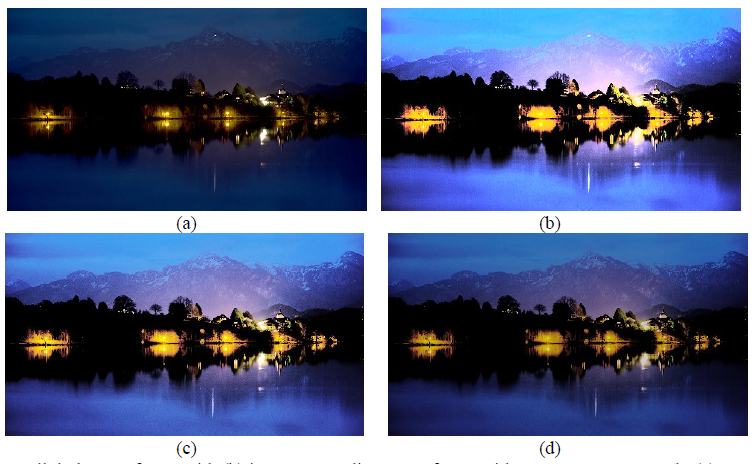
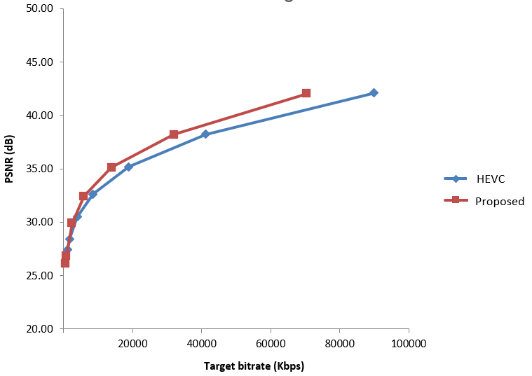
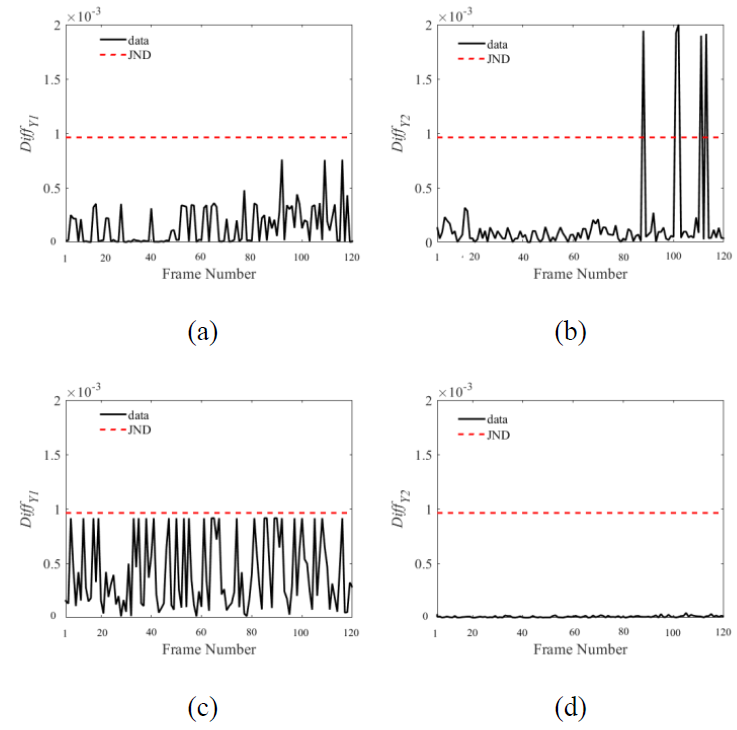
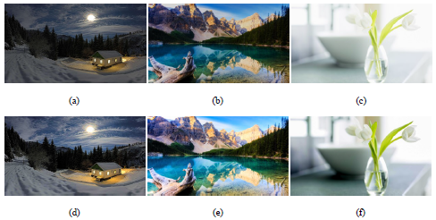
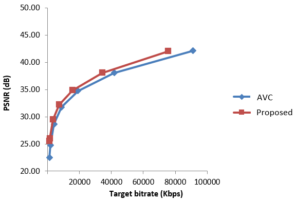
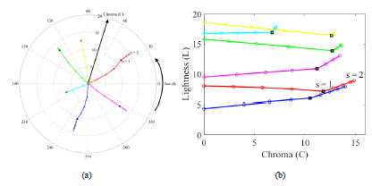
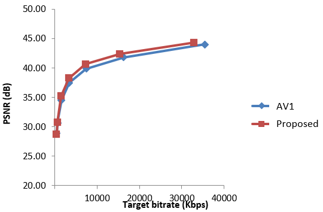
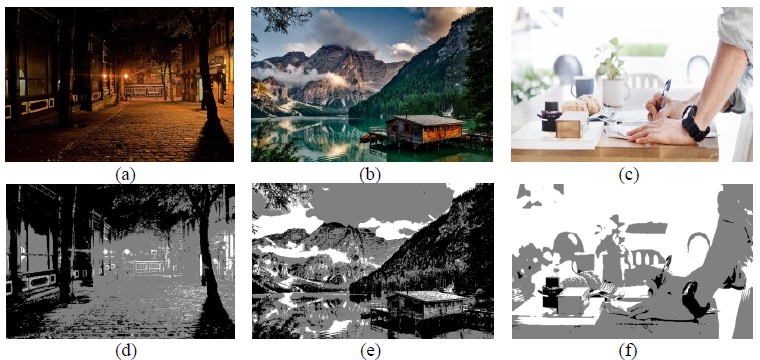
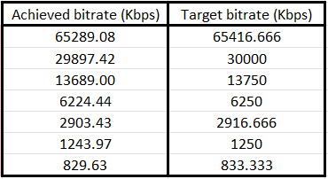
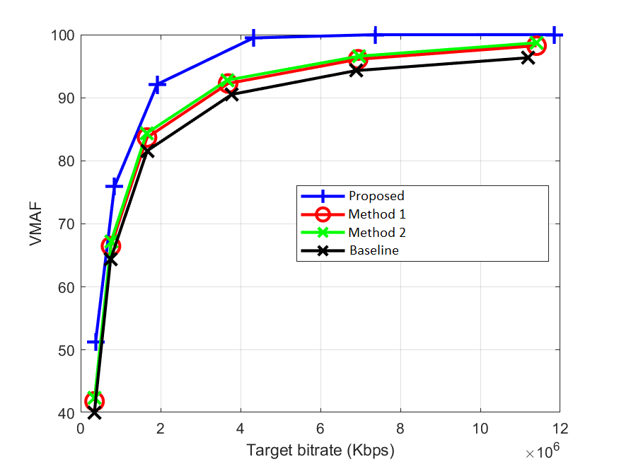

Perception-based Standard Dynamic Range (SDR) to High Dynamic Range (HDR) conversion
-

The drastic visual improvements introduced by HDR
technologies open new markets for a wide range of industries. In this project, through modeling
the behavior of the human eye, we propose a novel high visual quality video inverse Tone Mapping Operator (iTMO) that addresses the
inadequacies of the state-of-the-art methods, resulting in high visual quality HDR videos that match the capabilities of the HDR technology.
This algorithm uses a hybrid approach to achieve an optimal balance between the overall contrast and brightness of the output HDR frame
by maximizing a weighted sum of contrast and brightness difference between input SDR and generated HDR frame.
Our subjective evaluations demonstrated that the proposed algorithm outperforms the existing methods by an average of 75% in terms of
visual quality. Further testing using HDR VDP and
PU-SSIM objective quality metrics demonstrated that our
algorithm outperforms existing methods on a wide variety of input content.
Frame-level rate Control for real-time video applications
-

Rate control module is a critical component of a video encoder, especially for low-delay applications such as cloud gaming,
live streaming, and video conferencing. It ensures that video data is transmitted efficiently and smoothly, maintaining high visual
quality while adapting to varying network conditions and content complexity. In this work, we developed a frame-level
video rate control algorithm for NETINT Technologies's next-generation
Video Processing Units (VPUs). Our algorithm is content adaptive, delivering outstanding performance improvements in terms of BD-rate.
These enhancements are codec-agnostic, demonstrating consistent gains across AVC, HEVC, and AV1 codecs. Our algorithm achieves an
average of 10% improvement in BD-rate compared to previous generation encoders, reflecting its efficiency in maintaining high visual
quality at reduced bitrates.
Enhancing video temporal consistency
-

Maintaining consistent luminance is crucial for delivering high-quality viewing experiences.
Unwanted fluctuations in brightness, often perceived as flickering, can detract from the visual appeal and clarity of images
and videos. In this work, we address this challenge by implementing a condition on any brightness conversion that limits brightness
fluctuations to less than one Just Noticeable Difference (JND), effectively preventing perceptible flickering.
By ensuring that changes in brightness remain below the human threshold of detection, our algorithm guarantees a stable and
consistent luminance output, enhancing the viewer's experience.
Fully automatic, content adaptive SDR to HDR conversion
-
 Converting SDR content to HDR format to take advantage of the superior visual quality offered by HDR displays,
is an attractive proposition to SDR content owners and real-time broadcasters. In this work, we proposed a novel content
adaptive algorithm that models the sensitivity of the human eye to brightness changes in different
areas of a scene. By processing each frame indepently, our algorithms assigns different weights to different regions of a scene
depending on their pixel distribution. Our subjective evaluations indicate that our proposed method outperforms other
state-of-the-art methods by an average of 80% in terms of visual quality. In addition to subjective evaluations,
we also performed objective evaluations using HDR-VDP and PU-SSIM metrics and concluded that, on average,
our proposed iTMO outperforms the state-of-the-art methods in terms of these two metrics.
Block-Level Rate Control for Enhanced Video Encoding
-
 Block-level rate control, particularly at the Coding Tree Unit (CTU) level, is a crucial aspect of video encoding that focuses on
optimizing bitrate allocation within individual blocks of a video frame. This fine-grained approach allows for more precise control
over video quality and compression efficiency. In this project, by analyzing the complexity of each block, we developed a block-level
rate control algorithm for NETINT Technologies's next-generation VPUs. This algorithm
delivers substantial improvements in video encoding performance, achieving an average BD-rate gain of 12% over previous generation
encoders. These enhancements provide consistent benefits across AVC, HEVC, and AV1 codecs.
Hue preserving color adjustment
-
 Color adjustment plays a pivotal role in image processing and visual media, ensuring that the representation of colors remains true
to their intended appearance despite variations in lighting and display conditions. As brightness levels change, the hue and saturation
of colors can be unintentionally altered, leading to discrepancies that affect the visual quality and accuracy of images.
In this project, we developed a novel color adjustment algorithm designed to effectively manage changes in hue as brightness levels
are altered. The algorithm's effectiveness is demonstrated through a series of analyses comparing it to existing
methods. Our subjective results indicate that our proposed algorithm outperforms the existing methods by 70% in terms of how closely the
output colors match their input counterparts.
2-Pass video rate control for latency-tolerant applications
-
 2-pass video rate control is a strategic approach used in latency-tolerant applications, such as Video on Demand (VoD),
where the emphasis is on achieving optimal video quality and precise bitrate management. Unlike single-pass methods, 2-pass
rate control analyzes the video content in two stages, allowing for a more comprehensive understanding of both current and future
frame complexities. In this project, implemented in NETINT Technologies's next-generation VPUs,
we developed a 2-pass video rate control algorithm designed to enhance both BD-rate performance and target bitrate tracking for
VoD applications. By analyzing the complexity of current and future frames, the algorithm efficiently assigns Quantization
Parameters (QPs) to each frame. This results in an average BD-rate improvement of 6% compared to previous generation algorithms,
along with a 3% enhancement in target tracking accuracy. These improvements are consistently observed across various codecs,
including AVC, HEVC, and AV1.
Entropy-based image segmentation
-
 In this project, we developed an image segmentation algorithm based in the theory of entropy.
The primary objective was to effectively categorize an image into three distinct brightness regions: dark, normal, and bright.
By leveraging entropy, a measure of undertainty, the algorithm intelligently identifies the most informative thresholds to segment the
image. The segmented results is an image where each region is clearly defined, facilitating further analysis or processing tasks.
This method proves particularly useful in applications such as medical imaging, remote sensing, and computer vision, where precise
segmentation can lead to more accurate interpretations and decisions.
Enhanced target tracking for low-delay rate control algorithms
-
 In low-delay applications, such as live streaming and interactive video services, maintaining precise target tracking in rate
control algorithms is essential for delivering consistent video quality and minimizing latency. In this project, we developed an
innovative approach to enhance the target tracking performance of low-delay rate control algorithms. By analyzing the complexity of
different regions within a frame, the algorithm accurately estimates the frame's target size. This detailed analysis allows for more
precise bitrate distribution, resulting in an average improvement of 5% in target tracking performance compared to previous generation
algorithms.
Advanced post-processing for enhanced BD-Rate VMAF in video encoders
-
 In the realm of video encoding, optimizing the BD-rate VMAF score is critical for achieving superior video quality while maintaining
efficient bitrate usage. Video Multi-Method Assessment Fusion (VMAF) is a
perceptual video quality metric that combines multiple assessment methods to provide a comprehensive evaluation of video quality.
In this project, we developed post-processing techniques focused on the brightness and color channels of input video
sequences. This approach significantly enhanced the BD-rate VMAF score by an average of 24%, demonstrating substantial improvements
in video quality without compromising the original look and artistic impression of the videos. The transformations applied are
meticulously designed to preserve the aesthetic integrity of the content. The gains achieved through this method are consistent across
various rate control modes, including Constant Quantization Parameter (CQP), Constant Bitrate (CBR), and Constant Rate Factor (CRF).
Comprehensive SDR/HDR conversion suite for enhanced video compatibility
-
The seamless conversion between Standard Dynamic Range (SDR) and High Dynamic Range (HDR) formats is essential for ensuring compatibility
and optimal viewing experiences across diverse display technologies. In this project, we developed a SDR/HDR conversion suite for
NETINT Technologies's next generation VPUs, capable of performing three distinct types of
conversions. This suite offers robust solutions for converting SDR input to HDR format, transforming HDR input to SDR format, and
converting between different HDR formats, such as Hybrid Log-Gamma (HLG) to
HDR10. Each conversion process is meticulously designed to preserve the
visual integrity and artistic intent of the original content, ensuring that the resulting output meets the highest standards of
quality and compatibility. The hardware implementation of this suite ensures high performance and efficiency, making it
suitable for real-time applications and large-scale deployments.
Comprehensive survey on image and video quality assessment
-
In this survey paper, we conducted an extensive review of both subjective and objective methods
for assessing image and video quality. The project aimed to bridge the gap between human perception and algorithmic evaluation,
providing a holistic view of current methodologies and their applications. Subjective assessment involves human observers to
evaluate quality. In contrast, objective assessment leverages computational models to predict quality scores, offering efficiency
and consistency in evaluation. This survey meticulously categorizes and compares various assessment techniques, highlighting their
strengths, limitations, and potential areas for improvement. This work has been cited over 250 times in prestigous journals and conferences.